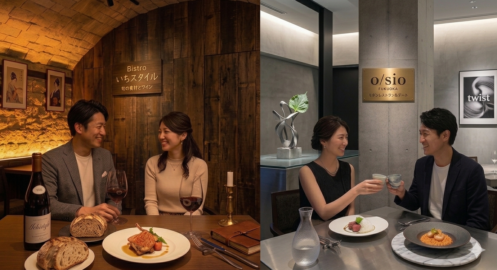

カップルに贈る、ちょっと背伸びした 「大人かわいい福岡よくばりデートプラン」をご紹介！
福岡は、都会の利便性と豊かな自然が共存するコンパクトシティです。博多ラーメンやもつ鍋などの絶品グルメ、天神・大名でのトレンド発信、そして少し足を伸ばせば海や山のリゾート感も味わえます。空港から中心部まで地下鉄で約5分という抜群のアクセスも大きな魅力です。
 12:00
福岡空港：絶品ランチ
12:00
福岡空港：絶品ランチ
旅の始まりは空港グルメから。洗練された店内で福岡の味を堪能。
 14:30
シーサイドももち
14:30
シーサイドももち
海風を感じながら、人気のクレープやソフトクリームでリフレッシュ。
 16:00
福岡タワー
16:00
福岡タワー
地上123mの展望室から、刻々と変わる福岡の街並みを一望。

18:30 天神：大人の隠れ家ディナー落ち着いたビストロやイタリアンで、上質な夜のひとときを。
 21:00
福岡空港：国内線展望デッキ
21:00
福岡空港：国内線展望デッキ
旅の締めくくりは滑走路の夜景。宝石のような光に包まれる特別な時間。